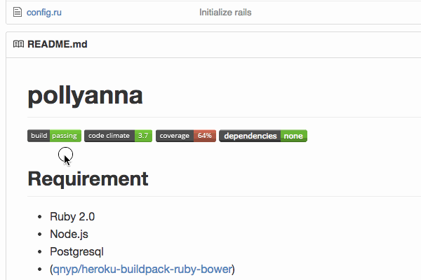

その build passingはいつ?
Nice badge: build passing (Travis CI)
build passing(Travis CI)のナイスバッジ

authored on Jul 5, 2013
a year ago!!!
Travis CI とGitHubの間
This paper is http://bit.ly/travis-ci-meetup-tachikoma-io
この資料は http://bit.ly/travis-ci-meetup-tachikoma-io です。
Travis CI is awesome, GitHub is awesome, but there is a gap between them,
Travis CIは神、GitHubも神、でも間にはスキマがあって
I make awesome web application filling this
埋める 神webアプリを作っています。
sanemat
いつ落ちたの? ホントに「今」?
It’s the story whether any specific programming language or not.
プログラミング言語問わずよくある話だと思う。
I found the failing test which I want to use.
使いたいライブラリのテストが落ちてるぞ。
I watched the result in Travis CI, I understood this.
Travis CI見て、どこが落ちてるかわかったぞ。
I fixed failing test!
テスト落ちてるの直したぞ。
I sent a pull request, but…
プルリクエストを送って、あれ?

WOOOOOO! Fail, Fail, Fail and Fail!
うわぁぁぁぁ。 Fail, Fail, Fail and Fail!
This is dependent libraries.
これはライブラリの依存のバージョンの話。
It is not a story that, we would have to fix the dependency version.
依存バージョンを固定してればよかった、という話では ない 。
We hit a bug on some library, so we should update that version.
あるライブラリのバグを踏んでいたので、そのライブラリのバージョンはどうしても上げる必要があった。
That requires updated node.js version.
それを動かすためには、node.jsのバージョンを上げる必要があり、
Updating node.js broke another library.
node.jsのバージョンを上げるには今度は別のライブラリを、
(snip)
以下略
図
The build failing is not now!
壊れたのは 今 じゃない
うんざりだ!
I made Tachikoma.io, this is awesome application.
神アプリつくった Tachikoma.io
キャプチャ
Interval Pull Request
Travis CIのAPIで、rebuildするのとの違い
いつから落ちたかTravis CIでわかる
Travis CIのできることはTravis CIに任せる
Tachikoma.io と組み合わせて使うのは,
Travis CI!
(4分ぐらい?)
各言語編
ruby: bundler, perl: carton, node.js: npm
依存関係コントロール, メタファイル
Gemfile.lock, carton.snapshot, package.json
依存関係update hell
これはもうこまめにアップデートしていく以外生き延びるすべはないのは明らか
定期的に bundle update (ruby) / carton update (perl) / david update (node.js)
依存ライブラリをアップデート
.tachikoma.yml
strategy: bundler
strategy: carton
strategy: david
strategy: none (default)
Tachikoma.io と組み合わせて使うのは,
Travis CI!!
public版はFree!
private版は有料にしようかと作ってます 価格は予定
さらにアイデアベース
Tachikoma.ioと組み合わせて使うのは,
Travis CI!!!
自分のプロダクトの自慢?
Yes!
ライブラリの依存バージョンを上げないことは、すぐにはライブラリやアプリケーションにダメージを与えません。 新しく使いたいライブラリを追加するときに、既存のライブラリにセキュリティフィックスが出たときに、それぞれが正しく動作するバージョンの組み合わせを見つけることは、非常に困難です。 仮に組み合わせを見つけたとしても、すごく後ろ向きですし、次を追加するとき、より困難になって立ちはだかります。 また、ライブラリの新機能、スピードアップ、rubyのバージョンアップなどメリットを享受するために低いバージョンだとそれが使えないことがあります。 結果的に一番痛みが少ないのは、常に定期的に(安定した)最新版を組み合わせていくことです。 ここまでみんな知ってるしわかってるのに、なぜ出来ない? それはツールやインテグレーションがまだ不足しているからだ、と私は考えます。 それを埋める1つのパーツがTachikoma.ioです。
世界に羽ばたくのでよろしくお願いいたします。